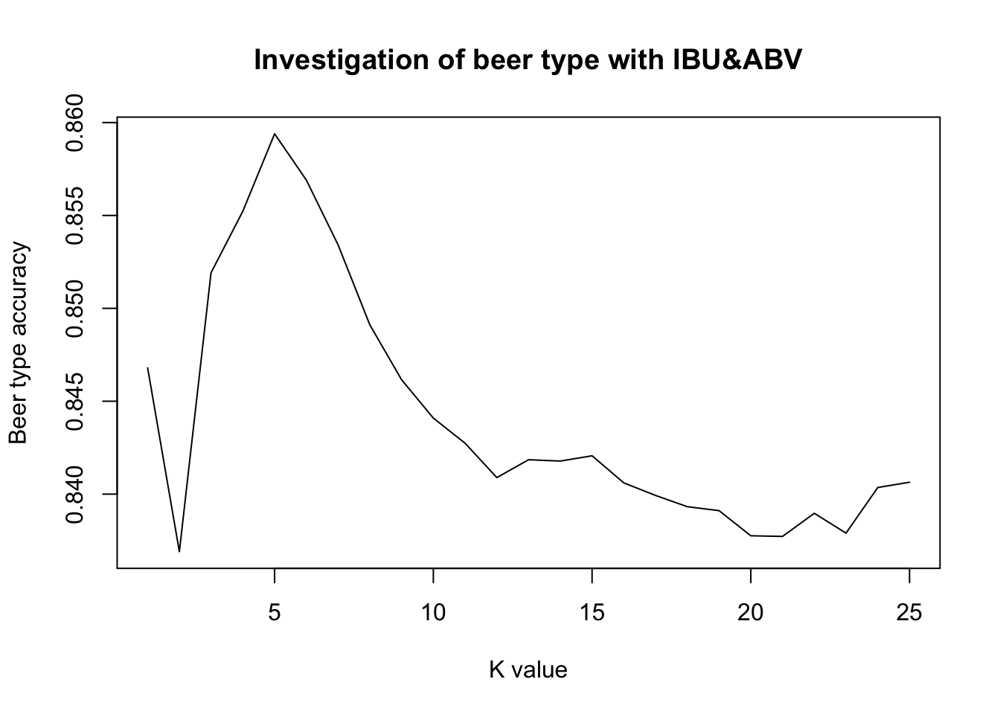

DDS Group beer analysis
Sophia, Chad, Clifford
7/4/2020
#Load Libraries and Data
library(Hmisc)## Loading required package: survival##
## Attaching package: 'survival'## The following object is masked from 'package:caret':
##
## cluster## Loading required package: Formula##
## Attaching package: 'Hmisc'## The following object is masked from 'package:e1071':
##
## impute## The following objects are masked from 'package:dplyr':
##
## src, summarize## The following objects are masked from 'package:base':
##
## format.pval, unitslibrary(dplyr)
library(ggplot2)
library(grid)
library(gridExtra)##
## Attaching package: 'gridExtra'## The following object is masked from 'package:dplyr':
##
## combinelibrary(jsonlite)##
## Attaching package: 'jsonlite'## The following object is masked from 'package:purrr':
##
## flattenlibrary(kableExtra)
library(knitr)
library(maps)##
## Attaching package: 'maps'## The following object is masked from 'package:purrr':
##
## maplibrary(naniar)
library(stringr)
library(tidyr)
library(tidyverse)
library(usmap)
library(caret)
library(class)##1. Number of Breweries Per State #merged Data first ## The number of breweries per state ranges from 1 to 47 with Colordo having the highest number.
## As seen from the map, the number increases with increase in the darckness of the color associated with each state.
#breweries <- read.csv("Breweries.csv")
#beer<- read.csv("Beers.csv")
breweries <- read.csv("~/Documents/SMU/DS6306 Doing DS/site/sophiawu1006.github.io/Breweries.csv")
beers <- read.csv("~/Documents/SMU/DS6306 Doing DS/site/sophiawu1006.github.io/Beers.csv")#2. Merge Beer Data with Brewery Data ## The data was obtained in two parts, the beer data and the brewery data. Both files were merged to obtain a common
## data for which analysis was carried out to address the needs of Budweiser.
beerBrew=merge(beers,breweries,by.x="Brewery_id",by.y="Brew_ID")
beerBrew$Brewery_id = as.factor(beerBrew$Brewery_id)
beerBrew$Beer_ID = as.factor(beerBrew$Beer_ID)
head(beerBrew, 6)## Brewery_id Name.x Beer_ID ABV IBU Style Ounces
## 1 1 Get Together 2692 0.045 50 American IPA 16
## 2 1 Maggie's Leap 2691 0.049 26 Milk / Sweet Stout 16
## 3 1 Wall's End 2690 0.048 19 English Brown Ale 16
## 4 1 Pumpion 2689 0.060 38 Pumpkin Ale 16
## 5 1 Stronghold 2688 0.060 25 American Porter 16
## 6 1 Parapet ESB 2687 0.056 47 Extra Special / Strong Bitter (ESB) 16
## Name.y City State
## 1 NorthGate Brewing Minneapolis MN
## 2 NorthGate Brewing Minneapolis MN
## 3 NorthGate Brewing Minneapolis MN
## 4 NorthGate Brewing Minneapolis MN
## 5 NorthGate Brewing Minneapolis MN
## 6 NorthGate Brewing Minneapolis MNtail(beerBrew,6)## Brewery_id Name.x Beer_ID ABV IBU Style Ounces
## 2405 556 Pilsner Ukiah 98 0.055 NA German Pilsener 12
## 2406 557 Heinnieweisse Weissebier 52 0.049 NA Hefeweizen 12
## 2407 557 Snapperhead IPA 51 0.068 NA American IPA 12
## 2408 557 Moo Thunder Stout 50 0.049 NA Milk / Sweet Stout 12
## 2409 557 Porkslap Pale Ale 49 0.043 NA American Pale Ale (APA) 12
## 2410 558 Urban Wilderness Pale Ale 30 0.049 NA English Pale Ale 12
## Name.y City State
## 2405 Ukiah Brewing Company Ukiah CA
## 2406 Butternuts Beer and Ale Garrattsville NY
## 2407 Butternuts Beer and Ale Garrattsville NY
## 2408 Butternuts Beer and Ale Garrattsville NY
## 2409 Butternuts Beer and Ale Garrattsville NY
## 2410 Sleeping Lady Brewing Company Anchorage AK#add in map data
#add in map data
stateCoords=us_map()
# Remove Leading Spaces from State Column of merged Beer Brew Data frame (prepare for join)
beerBrew$State = gsub(" ","",beerBrew$State)
#str(beerBrew)
# Summarise Each State's Number of Breweries and Beers
stateBrewBeer1 = beerBrew %>%
select(State, Brewery_id) %>%
group_by(State, Brewery_id)
stateBrewBeer2 = stateBrewBeer1 %>% distinct(State, Brewery_id)
stateBrewBeer3 = stateBrewBeer2 %>% group_by(State) %>% tally()
stateBrewBeer3$state = stateBrewBeer3$State
str(stateBrewBeer3)## tibble [51 × 3] (S3: tbl_df/tbl/data.frame)
## $ State: chr [1:51] "AK" "AL" "AR" "AZ" ...
## $ n : int [1:51] 7 3 2 11 39 47 8 1 2 15 ...
## $ state: chr [1:51] "AK" "AL" "AR" "AZ" ...stateBrewBeer4 = beerBrew %>%
select(State, Beer_ID) %>%
group_by(State, Beer_ID)
stateBrewBeer5 = stateBrewBeer4 %>% distinct(State, Beer_ID)
stateBrewBeer6 = stateBrewBeer5 %>% group_by(State) %>% tally()
StatebeerBrew=merge(stateBrewBeer6,stateBrewBeer3,by.x="State",by.y="State")
#rename counts
colnames(StatebeerBrew)[2] <-"Beers"
colnames(StatebeerBrew)[3] <-"Breweries"
#put in DataFrame for table
#on ppt
map_view_df = StatebeerBrew[order(StatebeerBrew$Breweries),] %>% select(state, Count = Breweries)
view(head(map_view_df,26))
view(tail(map_view_df,25))
#put in nice little map
#on ppt
plot_usmap(data=map_view_df,values="Count",labels = TRUE, offset=0.5, color = "red") +
scale_fill_continuous(low = "white", high = "red", name="Number Breweries")+
theme(legend.position = "right") +
labs(title = "Brewery Count",
subtitle = "Darker Areas have the Most Breweries") +
theme(panel.background = element_rect(color = "black", fill = "lightblue"))## Warning: Ignoring unknown parameters: offset## Warning: Use of `map_df$x` is discouraged. Use `x` instead.## Warning: Use of `map_df$y` is discouraged. Use `y` instead.## Warning: Use of `map_df$group` is discouraged. Use `group` instead.## Warning: Use of `centroid_labels$x` is discouraged. Use `x` instead.## Warning: Use of `centroid_labels$y` is discouraged. Use `y` instead.## Warning: Use of `centroid_labels$abbr` is discouraged. Use `abbr` instead. 3. Address the missing values in each column.
3. Address the missing values in each column.
The data set is missing information from three of the fields. IBU is missing 1,005 data points, ABV is missing 62 data points, and Style is missing 5 data points.
#on ppt
gg_miss_var(beerBrew)gg_miss_var(beerBrew %>% select(IBU,ABV, State), State)gg_miss_var(beerBrew %>% select(IBU,ABV, State), State, show_pct = TRUE)ggplot(beerBrew,
aes(x = IBU,
y = ABV)) +
geom_miss_point() + labs(title = "Plot of Values") + theme_light()
# convert empty string Styles to NAs to more easily see missings data in all columns
beerBrew$Style[which(beerBrew$Style=="")]=NA
view(sapply(beerBrew, function(x) sum(is.na(x))))4.Compute the median alcohol content and international bitterness unit for each state. Plot a bar chart to compare. The median ABV for each state ranges between 4% and just over 6% while the IBU ranges between 20 and just over 60.
beerBrew %>% filter(!is.na(ABV)) %>%
group_by(State) %>%
summarise(ABV=median(ABV)) %>%
ggplot(aes(x=reorder(State,-ABV),ABV)) +
geom_bar(stat="identity", position="dodge", color='skyblue',fill='darkred') +
# scale_y_continuous(limits = c(0.5,0.07))+
coord_flip()+
xlab("State") + ylab("ABV") + ggtitle("Median ABV by State") +
theme(panel.background = element_rect(color = "black", fill = "lightblue"))+
theme(text = element_text(size=8,color= 'black'))## `summarise()` ungrouping output (override with `.groups` argument)beerBrew %>% filter(!is.na(IBU)) %>%
group_by(State) %>%
summarise(IBU=median(IBU)) %>%
ggplot(aes(x=reorder(State,-IBU),IBU)) +
geom_bar(stat="identity", position="dodge", color='skyblue',fill='darkred') +
coord_flip()+
xlab("State") + ylab("IBU") + ggtitle("Median IBU by State") +
theme(panel.background = element_rect(color = "black", fill = "lightblue"))+
theme(text = element_text(size=8,color= 'black'))## `summarise()` ungrouping output (override with `.groups` argument) #5. (part 1) Which state has the maximum alcoholic (ABV) beer? #Which state has the most bitter (IBU) beer? ## The state with the maximum ABV was found to be Colorado with 12.8% ##The state with the minimum ABV was found to be CA with 1% ## The state with the maximum IBU was found to be Oregon with 138
## The state with the minimum IBU was found to be CA with 4
#find the single most ABV beer
beerBrew %>% filter(!is.na(ABV)) %>% mutate(maxABV=max(ABV)) %>%
filter(ABV==maxABV) %>% select(State, Name.x, Name.y, ABV)## State Name.x Name.y ABV
## 1 CO Lee Hill Series Vol. 5 - Belgian Style Quadrupel Ale Upslope Brewing Company 0.128beerBrew %>% filter(!is.na(ABV)) %>% mutate(minABV=min(ABV)) %>%
filter(ABV==minABV) %>% select(State, Name.x, Name.y, ABV)## State Name.x Name.y ABV
## 1 CA Scotty K NA Uncommon Brewers 0.001beerBrew %>% filter(!is.na(IBU)) %>% mutate(maxABV=max(IBU)) %>%
filter(IBU==maxABV) %>% select(State, Name.x, Name.y, IBU)## State Name.x Name.y IBU
## 1 OR Bitter Bitch Imperial IPA Astoria Brewing Company 138beerBrew %>% filter(!is.na(IBU)) %>% mutate(minIBU = min(IBU)) %>%
filter(IBU==minIBU) %>% select(State, Name.x, Name.y, IBU)## State Name.x Name.y IBU
## 1 CA Summer Solstice Anderson Valley Brewing Company 4
## 2 CA Summer Solstice Cerveza Crema (2009) Anderson Valley Brewing Company 4
## 3 CA Summer Solstice (2011) Anderson Valley Brewing Company 4#find the single most bitter beer
beerBrew %>% filter(!is.na(IBU)) %>% mutate(maxIBU=max(IBU)) %>%
filter(IBU==maxIBU)%>%select(State,Name.x,Name.y,IBU)## State Name.x Name.y IBU
## 1 OR Bitter Bitch Imperial IPA Astoria Brewing Company 138#6.Comment on the summary statistics and distribution of the ABV variable #The ABV is mostly normally distributed although slightly skewed to the right as the mean is Larger than the median.
ggplot(data=beerBrew, aes(x = State, y = ABV)) +
geom_boxplot(col = "red", fill="pink") + coord_flip() +
geom_jitter(position=position_jitter(0.05),col="blue") +
theme_bw(base_size = 14) +
xlab("State") + ylab("ABV") + ggtitle("ABV Stats by State") +
theme(panel.background = element_rect(color = "black", fill = "lightblue"))+
theme(text = element_text(size=8,color= 'black'))## Warning: Removed 62 rows containing non-finite values (stat_boxplot).## Warning: Removed 62 rows containing missing values (geom_point).ggplot(data=beerBrew, aes(x = State, y = IBU)) +
geom_boxplot(col = "red", fill="pink") + coord_flip() +
geom_jitter(position=position_jitter(0.05),col="blue") +
theme_bw(base_size = 14) +
xlab("State") + ylab("IBU") + ggtitle("IBU Stats by State") +
theme(panel.background = element_rect(color = "black", fill = "lightblue"))+
theme(text = element_text(size=8,color= 'black'))## Warning: Removed 1005 rows containing non-finite values (stat_boxplot).## Warning: Removed 1005 rows containing missing values (geom_point).#Check for normality of ABV using qq plot and histogram
#on ppt
beerBrew %>% filter(!is.na(ABV)) %>% select(ABV)%>%summary()## ABV
## Min. :0.00100
## 1st Qu.:0.05000
## Median :0.05600
## Mean :0.05977
## 3rd Qu.:0.06700
## Max. :0.12800gridExtra::grid.arrange(
beerBrew %>% filter(!is.na(ABV)& ABV > .001) %>% ggplot(aes(x=ABV))+
geom_histogram(aes(y=..density..), colour="black", fill="blue")+
geom_density(alpha=.5, fill="#FF6666") +
geom_vline(aes(xintercept=mean(ABV)),
color="red", linetype="dashed", size=1) +
geom_vline(aes(xintercept=median(ABV)),
color="black", linetype="dashed", size=1) +
labs(y = "Density") + labs(x = "ABV") +
ggtitle("Checking Normaily of ABV", subtitle = "Black line = Median and Red line = Mean") +
theme(panel.background = element_rect(color = "black", fill = "lightblue")),
beerBrew %>% filter(!is.na(ABV) & ABV > .001) %>% ggplot(aes(x=log(ABV)))+
geom_histogram(aes(y=..density..), colour="black", fill="blue")+
geom_density(alpha=.5, fill="#FF6666") +
geom_vline(aes(xintercept=mean(log(ABV))),
color="red", linetype="dashed", size=1) +
geom_vline(aes(xintercept=median(log(ABV))),
color="black", linetype="dashed", size=1) +
labs(y = "Density") + labs(x = "ABV") +
ggtitle("Checking Normaily of Log ABV", subtitle = "Black line = Median and Red line = Mean") +
theme(panel.background = element_rect(color = "black", fill = "lightblue")),
nrow = 1
)## `stat_bin()` using `bins = 30`. Pick better value with `binwidth`.
## `stat_bin()` using `bins = 30`. Pick better value with `binwidth`.gridExtra::grid.arrange(
beerBrew %>% filter(!is.na(ABV) & ABV > .001) %>% ggplot(aes(sample=ABV)) +stat_qq() + stat_qq_line(color = "red") + ggtitle("QQ Plot of ABV")+
theme(panel.background = element_rect(color = "black", fill = "lightblue")),
beerBrew %>% filter(!is.na(ABV) & ABV > .001) %>% ggplot(aes(sample=log(ABV))) + stat_qq() + stat_qq_line(color = "red") + ggtitle("QQ Plot of Log ABV")+
theme(panel.background = element_rect(color = "black", fill = "lightblue")),
nrow = 1
) #7. Is there an apparent relationship between the bitterness of the beer and its alcoholic content? Draw a scatter plot. Make your best judgment of a relationship and EXPLAIN your answer. #There is a moderate positive correlation between ABV and IBU.
#The upward slope is evidence of a positive relationship, meaning as the ABV increases, so does the IBU.
#Categorize the many styles into 7 groups
beerBrew$StyleCat= case_when(
grepl( "Ale",beerBrew$Name.x) ~ "Ale",
grepl("(India Pale Ale|IPA)",beerBrew$Name.x) ~ "IPA",
grepl("Lager",beerBrew$Name.x)~"Lager",
grepl("Stout",beerBrew$Name.x)~"Stout",
grepl("Porter",beerBrew$Name.x)~"Porter",
grepl("Cider",beerBrew$Name.x)~"Cider",
grepl("Pilsner",beerBrew$Name.x)~"Pilsner",
TRUE~"Other"
)
beerBrew$StyleCat2 = case_when(
grepl( "Ale",beerBrew$Style) ~ "Ale",
grepl("(India Pale Ale|IPA)",beerBrew$Style) ~ "IPA",
grepl("Lager",beerBrew$Style)~"Lager",
grepl("Stout",beerBrew$Style)~"Stout",
grepl("Porter",beerBrew$Style)~"Porter",
grepl("Cider",beerBrew$Style)~"Cider",
grepl("Pilsner",beerBrew$Style)~"Pilsner",
TRUE~"Other"
)
beerBrew$StyleCat3 = case_when(beerBrew$StyleCat == "Other" ~ beerBrew$StyleCat2, TRUE ~ beerBrew$StyleCat)
beerBrew %>% filter(!is.na(ABV)&!is.na(IBU))%>%
ggplot(aes(ABV,IBU,color=StyleCat3))+
geom_point(position=position_jitter(width=0.01),alpha=0.5)+
geom_smooth(method="lm",se=FALSE,size=2) +
labs(title="Correlation Between ABV and IBU") +
theme(panel.background = element_rect(color = "black", fill = "lightblue"))## `geom_smooth()` using formula 'y ~ x'beerBrew %>% filter(!is.na(ABV)&!is.na(IBU))%>%
ggplot(aes(ABV,IBU,color=StyleCat3))+
geom_point(position=position_jitter(width=0.01),alpha=0.5)+
geom_smooth(method="lm",se=FALSE,size=2) +
facet_wrap(~StyleCat3) +
labs(title="Correlation Between ABV and IBU", subtitle = "Broken out by Beer Style") +
theme(panel.background = element_rect(color = "black", fill = "lightblue"))## `geom_smooth()` using formula 'y ~ x'#8.1 Group beer styles into larger style buckets #Categorize the many styles into 5 groups
beers2 <- beers
colnames(beers2)## [1] "Name" "Beer_ID" "ABV" "IBU" "Brewery_id" "Style"
## [7] "Ounces"names(beers2) <- c("beername", "beerID", "beerABV", "beerIBU", "beer.brewery.id", "beerstyle", "beerOunce")
head(beers2)## beername beerID beerABV beerIBU beer.brewery.id beerstyle
## 1 Pub Beer 1436 0.050 NA 409 American Pale Lager
## 2 Devil's Cup 2265 0.066 NA 178 American Pale Ale (APA)
## 3 Rise of the Phoenix 2264 0.071 NA 178 American IPA
## 4 Sinister 2263 0.090 NA 178 American Double / Imperial IPA
## 5 Sex and Candy 2262 0.075 NA 178 American IPA
## 6 Black Exodus 2261 0.077 NA 178 Oatmeal Stout
## beerOunce
## 1 12
## 2 12
## 3 12
## 4 12
## 5 12
## 6 12brew2 <- breweries
colnames(brew2)## [1] "Brew_ID" "Name" "City" "State"names(brew2) <- c("brewery.id", "brewery.name", "brewery.city", "brewery.state.abb")
brew2 <- brew2 %>%
mutate(brewery.state.abb = trimws(brewery.state.abb))
head(brew2)## brewery.id brewery.name brewery.city brewery.state.abb
## 1 1 NorthGate Brewing Minneapolis MN
## 2 2 Against the Grain Brewery Louisville KY
## 3 3 Jack's Abby Craft Lagers Framingham MA
## 4 4 Mike Hess Brewing Company San Diego CA
## 5 5 Fort Point Beer Company San Francisco CA
## 6 6 COAST Brewing Company Charleston SC#Insert State name and region
#makes a data frame with State abbreviation, name and region
stateinf= data.frame(state.abb, state.name, state.region, state.x77, stringsAsFactors=FALSE)
head(stateinf[1:5])## state.abb state.name state.region Population Income
## Alabama AL Alabama South 3615 3624
## Alaska AK Alaska West 365 6315
## Arizona AZ Arizona West 2212 4530
## Arkansas AR Arkansas South 2110 3378
## California CA California West 21198 5114
## Colorado CO Colorado West 2541 4884#Merge data brew2 with data stateinf and calculate breweries numbers are present in each state
brewstate<- merge(brew2, stateinf[1:5], by.x = "brewery.state.abb", by.y = "state.abb", all.x = TRUE)
head(brewstate)## brewery.state.abb brewery.id brewery.name brewery.city state.name
## 1 AK 494 Broken Tooth Brewing Company Anchorage Alaska
## 2 AK 224 Midnight Sun Brewing Company Anchorage Alaska
## 3 AK 459 Kenai River Brewing Company Soldotna Alaska
## 4 AK 454 Denali Brewing Company Talkeetna Alaska
## 5 AK 558 Sleeping Lady Brewing Company Anchorage Alaska
## 6 AK 271 Alaskan Brewing Company Juneau Alaska
## state.region Population Income
## 1 West 365 6315
## 2 West 365 6315
## 3 West 365 6315
## 4 West 365 6315
## 5 West 365 6315
## 6 West 365 6315beermerged <- merge(beers2, brewstate, by.x = "beer.brewery.id", by.y = "brewery.id")beermerged$beeripaale<- ''
head(beermerged)## beer.brewery.id beername beerID beerABV beerIBU beerstyle
## 1 1 Get Together 2692 0.045 50 American IPA
## 2 1 Maggie's Leap 2691 0.049 26 Milk / Sweet Stout
## 3 1 Wall's End 2690 0.048 19 English Brown Ale
## 4 1 Pumpion 2689 0.060 38 Pumpkin Ale
## 5 1 Stronghold 2688 0.060 25 American Porter
## 6 1 Parapet ESB 2687 0.056 47 Extra Special / Strong Bitter (ESB)
## beerOunce brewery.state.abb brewery.name brewery.city state.name state.region
## 1 16 MN NorthGate Brewing Minneapolis Minnesota North Central
## 2 16 MN NorthGate Brewing Minneapolis Minnesota North Central
## 3 16 MN NorthGate Brewing Minneapolis Minnesota North Central
## 4 16 MN NorthGate Brewing Minneapolis Minnesota North Central
## 5 16 MN NorthGate Brewing Minneapolis Minnesota North Central
## 6 16 MN NorthGate Brewing Minneapolis Minnesota North Central
## Population Income beeripaale
## 1 3921 4675
## 2 3921 4675
## 3 3921 4675
## 4 3921 4675
## 5 3921 4675
## 6 3921 4675#Get all different beers styles' numbers
beermerged %>%count(beerstyle)## beerstyle n
## 1 5
## 2 Abbey Single Ale 2
## 3 Altbier 13
## 4 American Adjunct Lager 18
## 5 American Amber / Red Ale 133
## 6 American Amber / Red Lager 29
## 7 American Barleywine 3
## 8 American Black Ale 36
## 9 American Blonde Ale 108
## 10 American Brown Ale 70
## 11 American Dark Wheat Ale 7
## 12 American Double / Imperial IPA 105
## 13 American Double / Imperial Pilsner 2
## 14 American Double / Imperial Stout 9
## 15 American India Pale Lager 3
## 16 American IPA 424
## 17 American Malt Liquor 1
## 18 American Pale Ale (APA) 245
## 19 American Pale Lager 39
## 20 American Pale Wheat Ale 97
## 21 American Pilsner 25
## 22 American Porter 68
## 23 American Stout 39
## 24 American Strong Ale 14
## 25 American White IPA 11
## 26 American Wild Ale 6
## 27 Baltic Porter 6
## 28 Belgian Dark Ale 11
## 29 Belgian IPA 18
## 30 Belgian Pale Ale 24
## 31 Belgian Strong Dark Ale 6
## 32 Belgian Strong Pale Ale 7
## 33 Berliner Weissbier 11
## 34 Bière de Garde 7
## 35 Bock 7
## 36 Braggot 1
## 37 California Common / Steam Beer 6
## 38 Chile Beer 3
## 39 Cider 37
## 40 Cream Ale 29
## 41 Czech Pilsener 28
## 42 Doppelbock 7
## 43 Dortmunder / Export Lager 6
## 44 Dubbel 5
## 45 Dunkelweizen 4
## 46 English Barleywine 3
## 47 English Bitter 3
## 48 English Brown Ale 18
## 49 English Dark Mild Ale 6
## 50 English India Pale Ale (IPA) 13
## 51 English Pale Ale 12
## 52 English Pale Mild Ale 3
## 53 English Stout 2
## 54 English Strong Ale 4
## 55 Euro Dark Lager 5
## 56 Euro Pale Lager 2
## 57 Extra Special / Strong Bitter (ESB) 20
## 58 Flanders Oud Bruin 1
## 59 Flanders Red Ale 1
## 60 Foreign / Export Stout 6
## 61 Fruit / Vegetable Beer 49
## 62 German Pilsener 36
## 63 Gose 10
## 64 Grisette 1
## 65 Hefeweizen 40
## 66 Herbed / Spiced Beer 9
## 67 Irish Dry Stout 5
## 68 Irish Red Ale 12
## 69 Keller Bier / Zwickel Bier 3
## 70 Kölsch 42
## 71 Kristalweizen 1
## 72 Light Lager 12
## 73 Low Alcohol Beer 1
## 74 Maibock / Helles Bock 5
## 75 Märzen / Oktoberfest 30
## 76 Mead 5
## 77 Milk / Sweet Stout 10
## 78 Munich Dunkel Lager 4
## 79 Munich Helles Lager 20
## 80 Oatmeal Stout 18
## 81 Old Ale 2
## 82 Other 1
## 83 Pumpkin Ale 23
## 84 Quadrupel (Quad) 4
## 85 Radler 3
## 86 Rauchbier 2
## 87 Roggenbier 2
## 88 Russian Imperial Stout 11
## 89 Rye Beer 18
## 90 Saison / Farmhouse Ale 52
## 91 Schwarzbier 9
## 92 Scotch Ale / Wee Heavy 15
## 93 Scottish Ale 19
## 94 Shandy 3
## 95 Smoked Beer 1
## 96 Tripel 11
## 97 Vienna Lager 20
## 98 Wheat Ale 1
## 99 Winter Warmer 15
## 100 Witbier 51#filter missing value
beermerged %>%
filter(beerstyle == '')## beer.brewery.id beername beerID beerABV beerIBU beerstyle beerOunce
## 1 30 Special Release 2210 NA NA 16
## 2 67 OktoberFiesta 2527 0.053 27 12
## 3 161 Kilt Lifter Scottish-Style Ale 1635 0.060 21 12
## 4 167 The CROWLER™ 1796 NA NA 32
## 5 167 CAN'D AID Foundation 1790 NA NA 12
## brewery.state.abb brewery.name brewery.city state.name state.region
## 1 TX Cedar Creek Brewery Seven Points Texas South
## 2 TX Freetail Brewing Company San Antonio Texas South
## 3 AZ Four Peaks Brewing Company Tempe Arizona West
## 4 CO Oskar Blues Brewery Longmont Colorado West
## 5 CO Oskar Blues Brewery Longmont Colorado West
## Population Income beeripaale
## 1 12237 4188
## 2 12237 4188
## 3 2212 4530
## 4 2541 4884
## 5 2541 4884beermerged %>%
filter(beerstyle %in% c("American Double / Imperial IPA", "American IPA", "Belgian IPA", "English India Pale Ale (IPA)")) %>%
count(beerstyle)## beerstyle n
## 1 American Double / Imperial IPA 105
## 2 American IPA 424
## 3 Belgian IPA 18
## 4 English India Pale Ale (IPA) 13beeripa <- beermerged %>%
filter(beerstyle %in% c("American Double / Imperial IPA", "American IPA", "Belgian IPA", "English India Pale Ale (IPA)")) %>%
mutate(beeripaale= 'IPA')
head(beeripa)## beer.brewery.id beername beerID beerABV beerIBU beerstyle
## 1 1 Get Together 2692 0.045 50 American IPA
## 2 2 Citra Ass Down 2686 0.080 68 American Double / Imperial IPA
## 3 2 Rico Sauvin 2678 0.076 68 American Double / Imperial IPA
## 4 2 Pile of Face 2675 0.060 65 American IPA
## 5 4 Habitus (2014) 2668 0.080 100 American Double / Imperial IPA
## 6 4 Solis 2667 0.075 85 American IPA
## beerOunce brewery.state.abb brewery.name brewery.city state.name
## 1 16 MN NorthGate Brewing Minneapolis Minnesota
## 2 16 KY Against the Grain Brewery Louisville Kentucky
## 3 16 KY Against the Grain Brewery Louisville Kentucky
## 4 16 KY Against the Grain Brewery Louisville Kentucky
## 5 16 CA Mike Hess Brewing Company San Diego California
## 6 16 CA Mike Hess Brewing Company San Diego California
## state.region Population Income beeripaale
## 1 North Central 3921 4675 IPA
## 2 South 3387 3712 IPA
## 3 South 3387 3712 IPA
## 4 South 3387 3712 IPA
## 5 West 21198 5114 IPA
## 6 West 21198 5114 IPA# Kilt Lifter Scottish-Style Ale (1635)
beermerged[946,]## beer.brewery.id beername beerID beerABV beerIBU beerstyle
## 946 161 Kilt Lifter Scottish-Style Ale 1635 0.06 21
## beerOunce brewery.state.abb brewery.name brewery.city state.name
## 946 12 AZ Four Peaks Brewing Company Tempe Arizona
## state.region Population Income beeripaale
## 946 West 2212 4530beermerged %>%
filter(!beerstyle %in% c("American Double / Imperial IPA", "American IPA", "Belgian IPA", "English India Pale Ale (IPA)")) %>%
filter(str_detect(beerstyle, "Ale") | beerID==1635) %>%
count(beerstyle)## beerstyle n
## 1 1
## 2 Abbey Single Ale 2
## 3 American Amber / Red Ale 133
## 4 American Black Ale 36
## 5 American Blonde Ale 108
## 6 American Brown Ale 70
## 7 American Dark Wheat Ale 7
## 8 American Pale Ale (APA) 245
## 9 American Pale Wheat Ale 97
## 10 American Strong Ale 14
## 11 American Wild Ale 6
## 12 Belgian Dark Ale 11
## 13 Belgian Pale Ale 24
## 14 Belgian Strong Dark Ale 6
## 15 Belgian Strong Pale Ale 7
## 16 Cream Ale 29
## 17 English Brown Ale 18
## 18 English Dark Mild Ale 6
## 19 English Pale Ale 12
## 20 English Pale Mild Ale 3
## 21 English Strong Ale 4
## 22 Flanders Red Ale 1
## 23 Irish Red Ale 12
## 24 Old Ale 2
## 25 Pumpkin Ale 23
## 26 Saison / Farmhouse Ale 52
## 27 Scotch Ale / Wee Heavy 15
## 28 Scottish Ale 19
## 29 Wheat Ale 1beerale <- beermerged %>%
filter(!beerstyle %in% c("American Double / Imperial IPA", "American IPA", "Belgian IPA", "English India Pale Ale (IPA)")) %>%
filter(str_detect(beerstyle, "Ale") |beerID==1635) %>%
mutate(beeripaale= 'Ale')
head(beerale)## beer.brewery.id beername beerID beerABV beerIBU beerstyle beerOunce
## 1 1 Wall's End 2690 0.048 19 English Brown Ale 16
## 2 1 Pumpion 2689 0.060 38 Pumpkin Ale 16
## 3 2 A Beer 2683 0.042 42 American Pale Ale (APA) 16
## 4 2 Flesh Gourd'n 2681 0.066 21 Pumpkin Ale 16
## 5 2 Sho'nuff 2680 0.040 13 Belgian Pale Ale 16
## 6 2 Coq de la Marche 2677 0.051 38 Saison / Farmhouse Ale 16
## brewery.state.abb brewery.name brewery.city state.name state.region
## 1 MN NorthGate Brewing Minneapolis Minnesota North Central
## 2 MN NorthGate Brewing Minneapolis Minnesota North Central
## 3 KY Against the Grain Brewery Louisville Kentucky South
## 4 KY Against the Grain Brewery Louisville Kentucky South
## 5 KY Against the Grain Brewery Louisville Kentucky South
## 6 KY Against the Grain Brewery Louisville Kentucky South
## Population Income beeripaale
## 1 3921 4675 Ale
## 2 3921 4675 Ale
## 3 3387 3712 Ale
## 4 3387 3712 Ale
## 5 3387 3712 Ale
## 6 3387 3712 Alehead(beermerged) %>%
mutate(beer.style.words = as.character(str_split(beerstyle, boundary("word")))) %>%
select(beer.style.words)## beer.style.words
## 1 c("American", "IPA")
## 2 c("Milk", "Sweet", "Stout")
## 3 c("English", "Brown", "Ale")
## 4 c("Pumpkin", "Ale")
## 5 c("American", "Porter")
## 6 c("Extra", "Special", "Strong", "Bitter", "ESB")# India Pale Ale
IPA <- c("American Double / Imperial IPA", "American IPA", "Belgian IPA", "English India Pale Ale (IPA)")total_beers_count <- dim(beermerged)[1]
ipa_count <- dim(beeripa)[1]
ale_count <- dim(beerale)[1]
beercombined_ale <- rbind(beeripa, beerale)
ipa_ale_count <- dim(beercombined_ale)[1]
head(beercombined_ale)## beer.brewery.id beername beerID beerABV beerIBU beerstyle
## 1 1 Get Together 2692 0.045 50 American IPA
## 2 2 Citra Ass Down 2686 0.080 68 American Double / Imperial IPA
## 3 2 Rico Sauvin 2678 0.076 68 American Double / Imperial IPA
## 4 2 Pile of Face 2675 0.060 65 American IPA
## 5 4 Habitus (2014) 2668 0.080 100 American Double / Imperial IPA
## 6 4 Solis 2667 0.075 85 American IPA
## beerOunce brewery.state.abb brewery.name brewery.city state.name
## 1 16 MN NorthGate Brewing Minneapolis Minnesota
## 2 16 KY Against the Grain Brewery Louisville Kentucky
## 3 16 KY Against the Grain Brewery Louisville Kentucky
## 4 16 KY Against the Grain Brewery Louisville Kentucky
## 5 16 CA Mike Hess Brewing Company San Diego California
## 6 16 CA Mike Hess Brewing Company San Diego California
## state.region Population Income beeripaale
## 1 North Central 3921 4675 IPA
## 2 South 3387 3712 IPA
## 3 South 3387 3712 IPA
## 4 South 3387 3712 IPA
## 5 West 21198 5114 IPA
## 6 West 21198 5114 IPAbeercombined_ale %>%
filter(!is.na(beerABV)) %>%
ggplot(aes(x =beeripaale, y =beerABV, fill = beeripaale)) +
geom_boxplot() +
ggtitle("Boxplot of ABU between IPA and other Ale") +
xlab("Style") +
ylab("ABV")+
theme(panel.background = element_rect(color = "black", fill = "lightblue"))
beercombined_ale %>%
filter(!is.na(beerIBU)) %>%
ggplot(aes(x = beeripaale, y =beerIBU, fill = beeripaale)) +
geom_boxplot() +
ggtitle("Boxplot of IBU between IPA and other Ale") +
xlab("Style") +
ylab("IBU")+
theme(panel.background = element_rect(color = "black", fill = "lightblue"))
library(Hmisc)
beerclassify <- beercombined_ale %>%
filter(!is.na(beerABV) & !is.na(beerIBU) & !is.na(Population) & !is.na(Income))
beerclassify %>%
group_by(beeripaale) %>%
summarise(beers.abv.median = median(beerABV), beers.ibu.median = median(beerIBU), count = n())## `summarise()` ungrouping output (override with `.groups` argument)## # A tibble: 2 x 4
## beeripaale beers.abv.median beers.ibu.median count
## <chr> <dbl> <dbl> <int>
## 1 Ale 0.0545 30 552
## 2 IPA 0.0685 70 384beerclassify %>%
ggplot(aes(x = beerABV, y = beerIBU, color = beeripaale)) +
xlab("ABV") + ylab("IBU") +
geom_point()+
ggtitle("Classifying Beers Using ABV and IBU") +
theme(panel.background = element_rect(color = "black", fill = "lightblue"))library(class)
library(caret)
library(e1071)
library(purrr)
#use KNN classification to investigate the beer type with respect to IBV and ABU between IPA and ALE
set.seed(300)
split.perc = .70
train.indices = sample(1:dim(beerclassify)[1],round(split.perc * dim(beerclassify)[1]))
train = beerclassify[train.indices,]
test = beerclassify[-train.indices,]
dim(beerclassify) ## [1] 936 15dim(train) ## [1] 655 15dim(test)## [1] 281 15#use IBV and ABU variables to get beerIPAale type accuracy
classifications = knn(train[,c(4,5)],test[,c(4,5)], train$beeripaale, prob = TRUE, k = 10)
confusionMatrix(table(test$beeripaale,classifications))## Confusion Matrix and Statistics
##
## classifications
## Ale IPA
## Ale 166 10
## IPA 31 74
##
## Accuracy : 0.8541
## 95% CI : (0.8073, 0.8932)
## No Information Rate : 0.7011
## P-Value [Acc > NIR] : 1.723e-09
##
## Kappa : 0.6752
##
## Mcnemar's Test P-Value : 0.001787
##
## Sensitivity : 0.8426
## Specificity : 0.8810
## Pos Pred Value : 0.9432
## Neg Pred Value : 0.7048
## Prevalence : 0.7011
## Detection Rate : 0.5907
## Detection Prevalence : 0.6263
## Balanced Accuracy : 0.8618
##
## 'Positive' Class : Ale
## # use ABV and Income two variables to check beerIPAale type accuracy,then compare it with the above original one
classifications = knn(train[,c(5,14)],test[,c(5,14)], train$beeripaale, prob = TRUE, k = 17)
confusionMatrix(table(test$beeripaale,classifications))## Confusion Matrix and Statistics
##
## classifications
## Ale IPA
## Ale 159 17
## IPA 37 68
##
## Accuracy : 0.8078
## 95% CI : (0.7568, 0.8522)
## No Information Rate : 0.6975
## P-Value [Acc > NIR] : 1.881e-05
##
## Kappa : 0.573
##
## Mcnemar's Test P-Value : 0.009722
##
## Sensitivity : 0.8112
## Specificity : 0.8000
## Pos Pred Value : 0.9034
## Neg Pred Value : 0.6476
## Prevalence : 0.6975
## Detection Rate : 0.5658
## Detection Prevalence : 0.6263
## Balanced Accuracy : 0.8056
##
## 'Positive' Class : Ale
## Loop for many k and one training / test partition
acc = data.frame(accuracy = numeric(30), k = numeric(30))
for(i in 1:30)
{
classifications = knn(train[,c(4,5)],test[,c(4,5)], train$beeripaale, prob = TRUE, k = i)
table(test$beeripaale, classifications)
CM = confusionMatrix(table(test$beeripaale,classifications))
acc$accuracy[i] = CM$overall[1]
acc$k[i] = i
}
plot(acc$k,acc$accuracy, type = "l", main = "Investigation of beer type with IBU&ABV",xlab = "K Value", ylab="Accuracy")## Loop for many k and many training / test partitions
set.seed(100)
iterations = 100
numks = 25
masterAcc = matrix(nrow = iterations, ncol = numks)
for(j in 1:iterations)
{
train.indices = sample(1:dim(beerclassify)[1],round(split.perc * dim(beerclassify)[1]))
train = beerclassify[train.indices,]
test = beerclassify[-train.indices,]
for(i in 1:numks)
{
classifications = knn(train[,c(4,5)],test[,c(4,5)], train$beeripaale, prob = TRUE, k = i)
table(test$beeripaale, classifications)
CM = confusionMatrix(table(test$beeripaale,classifications))
masterAcc[j,i] = CM$overall[1]
}
}
MeanAcc = colMeans(masterAcc)
plot(seq(1,numks,1),MeanAcc, type = "l",main = "Investigation of beer type with IBU&ABV",xlab = "K value",ylab="Beer type accuracy")
which.max(MeanAcc)## [1] 5max(MeanAcc)## [1] 0.859395#check multicorrelation within IBU,ABV,Income, population, ounce
library(tidyverse)
library(corrplot)
library(RColorBrewer)
library(ggplot2)
library(GGally)
#Replace missing value with mean
beermerged1<- beermerged
beermerged1$beerABV[which(is.na(beermerged1$beerABV))] <- mean(beermerged1$beerABV,na.rm=TRUE)
beermerged1$beerIBU[which(is.na(beermerged1$beerIBU))] <- mean(beermerged1$beerIBU,na.rm=TRUE)
filterbeermerged <-beermerged1 %>% select(beerIBU,beerABV, beerOunce,Income, Population)
ggpairs(filterbeermerged, title="correlogram with ggpairs()") ## plot: [1,1] [=>------------------------------------------------------------] 4% est: 0s
## plot: [1,2] [====>---------------------------------------------------------] 8% est: 1s
## plot: [1,3] [======>-------------------------------------------------------] 12% est: 1s
## plot: [1,4] [=========>----------------------------------------------------] 16% est: 1s## Warning in ggally_statistic(data = data, mapping = mapping, na.rm = na.rm, : Removed 8 rows
## containing missing values## plot: [1,5] [===========>--------------------------------------------------] 20% est: 1s## Warning in ggally_statistic(data = data, mapping = mapping, na.rm = na.rm, : Removed 8 rows
## containing missing values## plot: [2,1] [==============>-----------------------------------------------] 24% est: 1s
## plot: [2,2] [================>---------------------------------------------] 28% est: 1s
## plot: [2,3] [===================>------------------------------------------] 32% est: 1s
## plot: [2,4] [=====================>----------------------------------------] 36% est: 1s## Warning in ggally_statistic(data = data, mapping = mapping, na.rm = na.rm, : Removed 8 rows
## containing missing values## plot: [2,5] [========================>-------------------------------------] 40% est: 1s## Warning in ggally_statistic(data = data, mapping = mapping, na.rm = na.rm, : Removed 8 rows
## containing missing values## plot: [3,1] [==========================>-----------------------------------] 44% est: 0s
## plot: [3,2] [=============================>--------------------------------] 48% est: 0s
## plot: [3,3] [===============================>------------------------------] 52% est: 0s
## plot: [3,4] [==================================>---------------------------] 56% est: 0s## Warning in ggally_statistic(data = data, mapping = mapping, na.rm = na.rm, : Removed 8 rows
## containing missing values## plot: [3,5] [====================================>-------------------------] 60% est: 0s## Warning in ggally_statistic(data = data, mapping = mapping, na.rm = na.rm, : Removed 8 rows
## containing missing values## plot: [4,1] [=======================================>----------------------] 64% est: 0s## Warning: Removed 8 rows containing missing values (geom_point).## plot: [4,2] [=========================================>--------------------] 68% est: 0s## Warning: Removed 8 rows containing missing values (geom_point).## plot: [4,3] [============================================>-----------------] 72% est: 0s## Warning: Removed 8 rows containing missing values (geom_point).## plot: [4,4] [==============================================>---------------] 76% est: 0s## Warning: Removed 8 rows containing non-finite values (stat_density).## plot: [4,5] [=================================================>------------] 80% est: 0s## Warning in ggally_statistic(data = data, mapping = mapping, na.rm = na.rm, : Removed 8 rows
## containing missing values## plot: [5,1] [===================================================>----------] 84% est: 0s## Warning: Removed 8 rows containing missing values (geom_point).## plot: [5,2] [======================================================>-------] 88% est: 0s## Warning: Removed 8 rows containing missing values (geom_point).## plot: [5,3] [========================================================>-----] 92% est: 0s## Warning: Removed 8 rows containing missing values (geom_point).## plot: [5,4] [===========================================================>--] 96% est: 0s## Warning: Removed 8 rows containing missing values (geom_point).## plot: [5,5] [==============================================================]100% est: 0s## Warning: Removed 8 rows containing non-finite values (stat_density).
corrplot(cor(filterbeermerged), type="upper", order="original") #9 Knock their socks off! Find one other useful inference from #the data that you feel Budweiser may be able to find value in.
#9 Knock their socks off! Find one other useful inference from #the data that you feel Budweiser may be able to find value in.
Using the beer market data and combining with US Census API data, we are able to create factors to compare each state to other states to find which states are underserved.
We then use this data to determine of the underserved states, what products should we sell to them.
###Get population from US Census website
#go get Key from US Census
US_Census_KEY = "3094ca397d1d50a4e3a230346dbaf7d801f753d4" #get from US Census website
#Pull Json data
Json <- "https://api.census.gov/data/2018/acs/acs1?get=NAME,B01001_001E&for=state:*"
#put in Dataframe
get_json <- jsonlite::fromJSON(Json, flatten = TRUE)
str(get_json)## chr [1:53, 1:3] "NAME" "Colorado" "Indiana" "Kentucky" "Louisiana" "Illinois" "Iowa" ...Pop_df <- as.data.frame(get_json)
str(Pop_df)## 'data.frame': 53 obs. of 3 variables:
## $ V1: chr "NAME" "Colorado" "Indiana" "Kentucky" ...
## $ V2: chr "B01001_001E" "5695564" "6691878" "4468402" ...
## $ V3: chr "state" "08" "18" "21" ...colnames(Pop_df)## [1] "V1" "V2" "V3"head(Pop_df)## V1 V2 V3
## 1 NAME B01001_001E state
## 2 Colorado 5695564 08
## 3 Indiana 6691878 18
## 4 Kentucky 4468402 21
## 5 Louisiana 4659978 22
## 6 Illinois 12741080 17#clean up by renaming columns and dropping unneeded columns/rows
names(Pop_df)[1] <- "State"
names(Pop_df)[2] <- "Population"
head(Pop_df)## State Population V3
## 1 NAME B01001_001E state
## 2 Colorado 5695564 08
## 3 Indiana 6691878 18
## 4 Kentucky 4468402 21
## 5 Louisiana 4659978 22
## 6 Illinois 12741080 17#clean up by dropping unneeded columns/rows
Pop_df <- select(Pop_df, -3)
Pop_df <- Pop_df[-c(1),]
#change factor to numeric
Pop_df$Population <- as.numeric(as.character(Pop_df$Population))
view(Pop_df)
head(Pop_df)## State Population
## 2 Colorado 5695564
## 3 Indiana 6691878
## 4 Kentucky 4468402
## 5 Louisiana 4659978
## 6 Illinois 12741080
## 7 Iowa 3156145summary(Pop_df)## State Population
## Length:52 Min. : 577737
## Class :character 1st Qu.: 1792926
## Mode :character Median : 4329558
## Mean : 6353127
## 3rd Qu.: 7262632
## Max. :39557045#take a look at data
Pop_df[order(Pop_df$Population),]## State Population
## 28 Wyoming 577737
## 18 Vermont 626299
## 36 District of Columbia 702455
## 16 Alaska 737438
## 25 North Dakota 760077
## 48 South Dakota 882235
## 10 Delaware 967171
## 50 Rhode Island 1057315
## 12 Montana 1062305
## 13 Maine 1338404
## 8 New Hampshire 1356458
## 47 Hawaii 1420491
## 45 Idaho 1754208
## 20 West Virginia 1805832
## 44 Nebraska 1929268
## 46 New Mexico 2095428
## 53 Kansas 2911510
## 30 Mississippi 2986530
## 9 Arkansas 3013825
## 19 Nevada 3034392
## 7 Iowa 3156145
## 37 Utah 3161105
## 23 Puerto Rico 3195153
## 31 Connecticut 3572665
## 21 Oklahoma 3943079
## 27 Oregon 4190713
## 4 Kentucky 4468402
## 5 Louisiana 4659978
## 17 Alabama 4887871
## 26 South Carolina 5084127
## 11 Minnesota 5611179
## 2 Colorado 5695564
## 22 Wisconsin 5813568
## 33 Maryland 6042718
## 41 Missouri 6126452
## 3 Indiana 6691878
## 52 Tennessee 6770010
## 35 Massachusetts 6902149
## 51 Arizona 7171646
## 49 Washington 7535591
## 24 Virginia 8517685
## 39 New Jersey 8908520
## 43 Michigan 9995915
## 14 North Carolina 10383620
## 15 Georgia 10519475
## 40 Ohio 11689442
## 6 Illinois 12741080
## 42 Pennsylvania 12807060
## 38 New York 19542209
## 34 Florida 21299325
## 32 Texas 28701845
## 29 California 39557045#graph Population
#in ppt
library(scales)##
## Attaching package: 'scales'## The following object is masked from 'package:purrr':
##
## discard## The following object is masked from 'package:readr':
##
## col_factorPop_df %>%
ggplot(aes(x = reorder(State, -Population), y = Population)) +
geom_bar(stat = "identity", fill = "darkred") +
#theme(axis.text.x = element_text(angle = 45, hjust = 1)) +
scale_y_continuous(labels = unit_format(unit = "M", scale = 1e-6)) +
labs(title = "2018 US Population by State",
subtitle = "Source: US Census API") +
xlab("State") + coord_flip() +
theme(panel.background = element_rect(color = "black", fill = "lightblue"))+
theme(text = element_text(size=8,color= 'black'))#pull out abbr from Coordinates map
StateNames <- stateCoords %>% select(abbr, full) %>% distinct(abbr, full)
#get style count by State
StyleCnt <- beerBrew %>% mutate(State=gsub(" ","",State)) %>%
select(State, StyleCat3) %>%
filter(!is.na(StyleCat3)) %>% group_by(State, StyleCat3) %>% tally( name = "Count")
#add Abbr to State Names
StatePop = merge(StateNames,Pop_df,by.x="full",by.y="State")
#Merge Population and Beer Data
Revenue_DF = merge(StatePop,StatebeerBrew,by.x="abbr",by.y="state")
str(Revenue_DF)## 'data.frame': 51 obs. of 6 variables:
## $ abbr : chr "AK" "AL" "AR" "AZ" ...
## $ full : chr "Alaska" "Alabama" "Arkansas" "Arizona" ...
## $ Population: num 737438 4887871 3013825 7171646 39557045 ...
## $ State : chr "AK" "AL" "AR" "AZ" ...
## $ Beers : int 25 10 5 47 183 265 27 8 2 58 ...
## $ Breweries : int 7 3 2 11 39 47 8 1 2 15 ...Revenue_DF[order(Revenue_DF$Beers/log(Revenue_DF$Population)),]## abbr full Population State Beers Breweries
## 50 WV West Virginia 1805832 WV 2 1
## 9 DE Delaware 967171 DE 2 2
## 29 ND North Dakota 760077 ND 3 1
## 3 AR Arkansas 3013825 AR 5 2
## 43 TN Tennessee 6770010 TN 6 3
## 32 NJ New Jersey 8908520 NJ 8 3
## 42 SD South Dakota 882235 SD 7 1
## 31 NH New Hampshire 1356458 NH 8 3
## 8 DC District of Columbia 702455 DC 8 1
## 2 AL Alabama 4887871 AL 10 3
## 34 NV Nevada 3034392 NV 11 2
## 26 MS Mississippi 2986530 MS 11 2
## 41 SC South Carolina 5084127 SC 14 4
## 33 NM New Mexico 2095428 NM 14 4
## 11 GA Georgia 10519475 GA 16 7
## 51 WY Wyoming 577737 WY 15 4
## 19 LA Louisiana 4659978 LA 19 5
## 37 OK Oklahoma 3943079 OK 19 6
## 21 MD Maryland 6042718 MD 21 7
## 18 KY Kentucky 4468402 KY 21 4
## 17 KS Kansas 2911510 KS 23 3
## 30 NE Nebraska 1929268 NE 25 5
## 45 UT Utah 3161105 UT 26 4
## 7 CT Connecticut 3572665 CT 27 8
## 1 AK Alaska 737438 AK 25 7
## 12 HI Hawaii 1420491 HI 27 4
## 22 ME Maine 1338404 ME 27 9
## 40 RI Rhode Island 1057315 RI 27 5
## 13 IA Iowa 3156145 IA 30 5
## 47 VT Vermont 626299 VT 27 10
## 14 ID Idaho 1754208 ID 30 5
## 46 VA Virginia 8517685 VA 40 16
## 25 MO Missouri 6126452 MO 42 9
## 27 MT Montana 1062305 MT 40 9
## 4 AZ Arizona 7171646 AZ 47 11
## 36 OH Ohio 11689442 OH 49 15
## 10 FL Florida 21299325 FL 58 15
## 24 MN Minnesota 5611179 MN 55 12
## 28 NC North Carolina 10383620 NC 59 19
## 48 WA Washington 7535591 WA 68 23
## 35 NY New York 19542209 NY 74 16
## 20 MA Massachusetts 6902149 MA 82 23
## 15 IL Illinois 12741080 IL 91 18
## 49 WI Wisconsin 5813568 WI 87 20
## 39 PA Pennsylvania 12807060 PA 100 25
## 44 TX Texas 28701845 TX 130 28
## 38 OR Oregon 4190713 OR 125 29
## 16 IN Indiana 6691878 IN 139 22
## 23 MI Michigan 9995915 MI 162 32
## 5 CA California 39557045 CA 183 39
## 6 CO Colorado 5695564 CO 265 47#add metrics
Revenue_DF = Revenue_DF %>% mutate(LogPop = log(Population),
brewsPerLogPop = Beers/log(Population),
beersPerLogPop = Beers/log(Population))
colnames(Revenue_DF)[1] <- "state"
#put in DataFrame for table
Revenue_DF[order(Revenue_DF$beersPerLogPop),] ## state full Population State Beers Breweries LogPop brewsPerLogPop
## 50 WV West Virginia 1805832 WV 2 1 14.40653 0.1388259
## 9 DE Delaware 967171 DE 2 2 13.78213 0.1451154
## 29 ND North Dakota 760077 ND 3 1 13.54118 0.2215465
## 3 AR Arkansas 3013825 AR 5 2 14.91872 0.3351494
## 43 TN Tennessee 6770010 TN 6 3 15.72801 0.3814849
## 32 NJ New Jersey 8908520 NJ 8 3 16.00252 0.4999213
## 42 SD South Dakota 882235 SD 7 1 13.69021 0.5113141
## 31 NH New Hampshire 1356458 NH 8 3 14.12039 0.5665567
## 8 DC District of Columbia 702455 DC 8 1 13.46234 0.5942505
## 2 AL Alabama 4887871 AL 10 3 15.40227 0.6492551
## 34 NV Nevada 3034392 NV 11 2 14.92552 0.7369927
## 26 MS Mississippi 2986530 MS 11 2 14.90962 0.7377786
## 41 SC South Carolina 5084127 SC 14 4 15.44163 0.9066398
## 33 NM New Mexico 2095428 NM 14 4 14.55527 0.9618510
## 11 GA Georgia 10519475 GA 16 7 16.16874 0.9895639
## 51 WY Wyoming 577737 WY 15 4 13.26687 1.1306356
## 19 LA Louisiana 4659978 LA 19 5 15.35452 1.2374205
## 37 OK Oklahoma 3943079 OK 19 6 15.18747 1.2510311
## 21 MD Maryland 6042718 MD 21 7 15.61436 1.3449154
## 18 KY Kentucky 4468402 KY 21 4 15.31254 1.3714249
## 17 KS Kansas 2911510 KS 23 3 14.88418 1.5452646
## 30 NE Nebraska 1929268 NE 25 5 14.47265 1.7273960
## 45 UT Utah 3161105 UT 26 4 14.96643 1.7372210
## 7 CT Connecticut 3572665 CT 27 8 15.08882 1.7894041
## 1 AK Alaska 737438 AK 25 7 13.51094 1.8503528
## 12 HI Hawaii 1420491 HI 27 4 14.16651 1.9059030
## 22 ME Maine 1338404 ME 27 9 14.10699 1.9139450
## 40 RI Rhode Island 1057315 RI 27 5 13.87124 1.9464730
## 13 IA Iowa 3156145 IA 30 5 14.96486 2.0046961
## 47 VT Vermont 626299 VT 27 10 13.34758 2.0228381
## 14 ID Idaho 1754208 ID 30 5 14.37753 2.0865896
## 46 VA Virginia 8517685 VA 40 16 15.95766 2.5066339
## 25 MO Missouri 6126452 MO 42 9 15.62813 2.6874623
## 27 MT Montana 1062305 MT 40 9 13.87595 2.8826852
## 4 AZ Arizona 7171646 AZ 47 11 15.78565 2.9773885
## 36 OH Ohio 11689442 OH 49 15 16.27420 3.0109013
## 10 FL Florida 21299325 FL 58 15 16.87419 3.4372028
## 24 MN Minnesota 5611179 MN 55 12 15.54027 3.5391917
## 28 NC North Carolina 10383620 NC 59 19 16.15574 3.6519528
## 48 WA Washington 7535591 WA 68 23 15.83515 4.2942447
## 35 NY New York 19542209 NY 74 16 16.78809 4.4078875
## 20 MA Massachusetts 6902149 MA 82 23 15.74734 5.2072275
## 15 IL Illinois 12741080 IL 91 18 16.36034 5.5622309
## 49 WI Wisconsin 5813568 WI 87 20 15.57571 5.5856219
## 39 PA Pennsylvania 12807060 PA 100 25 16.36551 6.1104125
## 44 TX Texas 28701845 TX 130 28 17.17247 7.5702555
## 38 OR Oregon 4190713 OR 125 29 15.24838 8.1975914
## 16 IN Indiana 6691878 IN 139 22 15.71641 8.8442617
## 23 MI Michigan 9995915 MI 162 32 16.11769 10.0510699
## 5 CA California 39557045 CA 183 39 17.49325 10.4611753
## 6 CO Colorado 5695564 CO 265 47 15.55520 17.0361057
## beersPerLogPop
## 50 0.1388259
## 9 0.1451154
## 29 0.2215465
## 3 0.3351494
## 43 0.3814849
## 32 0.4999213
## 42 0.5113141
## 31 0.5665567
## 8 0.5942505
## 2 0.6492551
## 34 0.7369927
## 26 0.7377786
## 41 0.9066398
## 33 0.9618510
## 11 0.9895639
## 51 1.1306356
## 19 1.2374205
## 37 1.2510311
## 21 1.3449154
## 18 1.3714249
## 17 1.5452646
## 30 1.7273960
## 45 1.7372210
## 7 1.7894041
## 1 1.8503528
## 12 1.9059030
## 22 1.9139450
## 40 1.9464730
## 13 2.0046961
## 47 2.0228381
## 14 2.0865896
## 46 2.5066339
## 25 2.6874623
## 27 2.8826852
## 4 2.9773885
## 36 3.0109013
## 10 3.4372028
## 24 3.5391917
## 28 3.6519528
## 48 4.2942447
## 35 4.4078875
## 20 5.2072275
## 15 5.5622309
## 49 5.5856219
## 39 6.1104125
## 44 7.5702555
## 38 8.1975914
## 16 8.8442617
## 23 10.0510699
## 5 10.4611753
## 6 17.0361057#put in map
plot_usmap(data=Revenue_DF,values="beersPerLogPop",labels = TRUE, offset=0.5, color = "red") +
scale_fill_continuous(type = "viridis", name="Beers per capita") +
theme(legend.position = "right") +
labs(title = "Beer Density",
subtitle = "Darker Areas have the Fewest Beers per capita") +
theme(panel.background = element_rect(color = "black", fill = "lightblue"))## Warning: Ignoring unknown parameters: offset## Warning: Use of `map_df$x` is discouraged. Use `x` instead.## Warning: Use of `map_df$y` is discouraged. Use `y` instead.## Warning: Use of `map_df$group` is discouraged. Use `group` instead.## Warning: Use of `centroid_labels$x` is discouraged. Use `x` instead.## Warning: Use of `centroid_labels$y` is discouraged. Use `y` instead.## Warning: Use of `centroid_labels$abbr` is discouraged. Use `abbr` instead.#Regression Line
#Look at data points with high residual error
#in ppt
Revenue_DF %>% filter(beersPerLogPop < 7.5) %>%
ggplot(aes(LogPop,beersPerLogPop)) +
geom_point(position=position_jitter(width=0.01),alpha=0.5)+
geom_smooth(method="lm",se=FALSE,size=2) +
labs(title="Correlation between Population and Count of Beers") +
theme(panel.background = element_rect(color = "black", fill = "lightblue"))+
labs(y = "Beers per Log of US Population") + labs(x = "Log of US Population")## `geom_smooth()` using formula 'y ~ x'#get low values as areas to focus
#in ppt
TargetStates <- Revenue_DF %>% filter(beersPerLogPop <= 2,
LogPop > 15) %>%
select(State = full, Population, BeerFactor = beersPerLogPop)
view(TargetStates)#which kind of beer to sell
StyleCnt$StyleCat3 <- as.factor(StyleCnt$StyleCat3)
StyleCnt$State <- as.factor(StyleCnt$State)
#str(StyleCnt)
StyleTotals <- StyleCnt %>% group_by(StyleCat3) %>% summarise(Total = sum(Count))## `summarise()` ungrouping output (override with `.groups` argument)StyleTotals$BeerFactor <- StyleTotals$Total/sum(Revenue_DF$LogPop)
TargetStates_LogPop <- Revenue_DF %>% filter(State == "AR" | State == "MS" |State == "AL" |
State == "GA" |State == "SC" | State == "TN" ) %>%
select(LogPop) %>% sum(Revenue_DF$LogPop)
str(TargetStates_LogPop)## num 866#get style count by State
TargetStates_StyleCnt <- beerBrew %>% filter(State == "AR" | State == "MS" |State == "AL" |
State == "GA" |State == "SC" | State == "TN" ) %>%
mutate(State=gsub(" ","",State)) %>%
select(State, StyleCat3) %>%
filter(!is.na(StyleCat3)) %>% group_by(StyleCat3) %>% tally( name = "Totals")
TargetStates_StyleCnt$BeerFactor <- TargetStates_StyleCnt$Totals/TargetStates_LogPop
#Show Which Beers to Sell
#in ppt
gridExtra::grid.arrange(
StyleTotals %>% ggplot(aes(StyleCat3,BeerFactor)) +
geom_point(shape = 21, colour = "black", fill = "red", size = 5, stroke = 5)+
labs(title="Plotting Beer Factor by Style Accross the US") +
theme(panel.background = element_rect(color = "black", fill = "lightblue"))+
labs(y = "Beer Factor") + labs(x = "Beer Style"),
TargetStates_StyleCnt %>% ggplot(aes(StyleCat3,BeerFactor)) +
geom_point(shape = 21, colour = "black", fill = "red", size = 5, stroke = 5)+
labs(title="Plotting Beer Factor by Style in Target States") +
theme(panel.background = element_rect(color = "black", fill = "lightblue"))+
labs(y = "Beer Factor") + labs(x = "Beer Style"),
nrow = 1
)The conclusions that we can draw from this exercise are that differences exist between various parts of the country in terms of types, strengths, and flavors or beer. These differences have shown us that certain geographies within the US are lacking in types of beers available. We hope to use this data to create a selling opportunity for Budweiser by selling Cider in a market where Cider does not currently exists, despite being popular in other parts of the country.